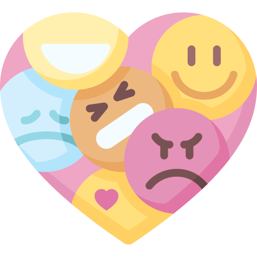

Achievement Unlock
10G - Resolved Mrs Amelia Morgan's Negative Emotions
It seems like you
have resolve all the
negative emotions
However, what could be done differently?
Let's revisit
the scenario
It seems like
you have
resolve all
the negative
emotions
However, what could be done differently?
Let's revisit
the scenario